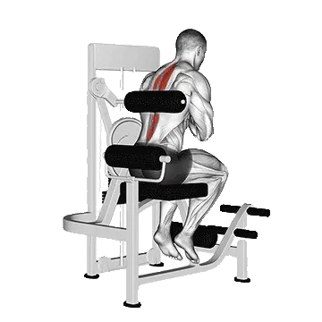

中级平均重量
一般中级训练者的参考值。
男性
264 lb
女性
90 lb
器械背部伸展平均重量 [1RM]
| 等级 | ||
|---|---|---|
| 初学者 | 67 lb | 28 lb |
| 初级者 | 147 lb | 54 lb |
| 中级者 | 264 lb | 90 lb |
| 进阶者 | 415 lb | 135 lb |
| 菁英 | 591 lb | 187 lb |
注：这些标准是以一般训练者的 1RM 为基准估算。体重、年龄等个人因素都可能造成差异。详细数据请参考下方表格。
器械背部伸展力量标准(lb)
男性按体重(lb)数据 [1RM]
| 体重 | 初学者 | 初级者 | 中级者 | 进阶者 | 菁英 |
|---|---|---|---|---|---|
| 110 | 20 | 65 | 140 | 243 | 367 |
| 120 | 29 | 80 | 161 | 270 | 400 |
| 130 | 38 | 95 | 182 | 297 | 433 |
| 140 | 47 | 109 | 202 | 322 | 463 |
| 150 | 57 | 124 | 221 | 347 | 493 |
| 160 | 67 | 138 | 241 | 371 | 521 |
| 170 | 77 | 153 | 259 | 394 | 549 |
| 180 | 87 | 167 | 278 | 417 | 575 |
| 190 | 97 | 181 | 296 | 438 | 601 |
| 200 | 108 | 195 | 313 | 460 | 626 |
| 210 | 118 | 208 | 330 | 481 | 650 |
| 220 | 128 | 222 | 347 | 501 | 674 |
| 230 | 138 | 235 | 364 | 520 | 696 |
| 240 | 148 | 248 | 380 | 540 | 719 |
| 250 | 158 | 260 | 395 | 558 | 740 |
| 260 | 168 | 273 | 411 | 577 | 761 |
| 270 | 177 | 285 | 426 | 595 | 782 |
| 280 | 187 | 297 | 441 | 612 | 802 |
| 290 | 196 | 309 | 455 | 629 | 821 |
| 300 | 206 | 321 | 470 | 646 | 841 |
| 310 | 215 | 333 | 484 | 662 | 859 |
男性按年龄数据 [1RM]
| 年龄 | 初学者 | 初级者 | 中级者 | 进阶者 | 菁英 |
|---|---|---|---|---|---|
| 15 | 57 | 125 | 225 | 353 | 504 |
| 20 | 65 | 143 | 257 | 405 | 576 |
| 25 | 67 | 147 | 264 | 415 | 591 |
| 30 | 67 | 147 | 264 | 415 | 591 |
| 35 | 67 | 147 | 264 | 415 | 591 |
| 40 | 67 | 147 | 264 | 415 | 591 |
| 45 | 63 | 139 | 250 | 394 | 561 |
| 50 | 59 | 131 | 235 | 370 | 527 |
| 55 | 55 | 121 | 217 | 342 | 487 |
| 60 | 50 | 110 | 198 | 312 | 445 |
| 65 | 45 | 100 | 179 | 282 | 402 |
| 70 | 41 | 89 | 161 | 253 | 360 |
| 75 | 36 | 80 | 144 | 226 | 322 |
| 80 | 33 | 71 | 129 | 202 | 288 |
| 85 | 29 | 64 | 115 | 181 | 258 |
| 90 | 26 | 58 | 104 | 163 | 233 |
女性按体重(lb)数据 [1RM]
| 体重 | 初学者 | 初级者 | 中级者 | 进阶者 | 菁英 |
|---|---|---|---|---|---|
| 90 | 17 | 38 | 69 | 108 | 153 |
| 100 | 20 | 42 | 73 | 114 | 160 |
| 110 | 22 | 45 | 78 | 119 | 167 |
| 120 | 24 | 48 | 82 | 124 | 173 |
| 130 | 27 | 51 | 86 | 129 | 178 |
| 140 | 29 | 54 | 89 | 133 | 184 |
| 150 | 31 | 57 | 93 | 138 | 189 |
| 160 | 32 | 59 | 96 | 142 | 193 |
| 170 | 34 | 62 | 99 | 146 | 198 |
| 180 | 36 | 64 | 102 | 149 | 202 |
| 190 | 38 | 67 | 105 | 153 | 206 |
| 200 | 40 | 69 | 108 | 156 | 210 |
| 210 | 41 | 71 | 111 | 159 | 214 |
| 220 | 43 | 73 | 113 | 162 | 218 |
| 230 | 44 | 75 | 116 | 165 | 221 |
| 240 | 46 | 77 | 118 | 168 | 224 |
| 250 | 47 | 79 | 121 | 171 | 228 |
| 260 | 49 | 81 | 123 | 174 | 231 |
女性按年龄数据 [1RM]
| 年龄 | 初学者 | 初级者 | 中级者 | 进阶者 | 菁英 |
|---|---|---|---|---|---|
| 15 | 24 | 46 | 76 | 115 | 159 |
| 20 | 27 | 52 | 87 | 131 | 182 |
| 25 | 28 | 54 | 90 | 135 | 187 |
| 30 | 28 | 54 | 90 | 135 | 187 |
| 35 | 28 | 54 | 90 | 135 | 187 |
| 40 | 28 | 54 | 90 | 135 | 187 |
| 45 | 26 | 51 | 85 | 128 | 177 |
| 50 | 25 | 48 | 80 | 120 | 166 |
| 55 | 23 | 44 | 74 | 111 | 154 |
| 60 | 21 | 40 | 67 | 101 | 140 |
| 65 | 19 | 36 | 61 | 92 | 127 |
| 70 | 17 | 33 | 55 | 82 | 114 |
| 75 | 15 | 29 | 49 | 74 | 102 |
| 80 | 14 | 26 | 44 | 66 | 91 |
| 85 | 12 | 23 | 39 | 59 | 82 |
| 90 | 11 | 21 | 35 | 53 | 74 |
注：器械与绳索设备的标示重量会因品牌与结构而异，请作为相同条件下的比较参考。
目标肌群
| 分类 | 肌群 |
|---|---|
| 主要发力肌群 | 竖脊肌, 臀大肌 |
| 辅助肌群 | 腿后肌群 |
| 稳定肌群 | 腹外斜肌 |
| 握力 | 无 |
用 Shiba App 记录与分析
集中查看重量、次数与进步变化。
表格说明
| 等级 | 说明 | 分布 |
|---|---|---|
| 初学者 | 掌握正确动作，并持续训练至少 1 个月。 | 后 5% |
| 初级者 | 持续规律训练至少 6 个月。 | 前 80% |
| 中级者 | 持续规律训练至少 2 年。 | 前 50% |
| 进阶者 | 持续规律训练超过 5 年。 | 前 20% |
| 菁英 | 针对该动作专项训练超过 5 年。 | 前 5% |